So far the book used models that represent text (BERT and friends). This chapter switches to models that generate text and asks: how do you get good output from them? First the mechanics: pick a model (start small, with Phi-3-mini), load it, see the hidden chat template, and steer randomness with temperature, top_p and top_k. Then the craft: a prompt is built from parts (instruction, data, output indicator, persona, context, format, audience, tone) that you add, remove and reorder in an experiment loop; you can show examples (in-context learning) and split work across calls (chain prompting). Then "reasoning": make the model show its work (chain-of-thought), vote across many samples (self-consistency), or explore a tree of ideas (tree-of-thought). Finally, for production: verify and constrain the output, from few-shot format examples to grammars that only let legal tokens through, like a JSON grammar in llama-cpp-python.
The chapter climbs a ladder. Each rung fixes a weakness of the one below it. Read the rows top to bottom; the orange box in each row is the idea the next row reacts to.
Mental model for the whole chapter: everything you can do sits at one of four places. You change the prompt text, the sampler (how the next token is picked), or what you do with the output (check it, vote on it, feed it to the next call). The model weights only change with fine-tuning, which the book leaves for Chapter 12.
The first chapters used LLMs (large language models) for classification, both supervised (with labels) and unsupervised (clustering), using models that focus on representing text, such as BERT and its relatives. Then the book moved to models trained mainly for text generation. These are often called GPT models (generative pre-trained transformers). Their key trick: they write new text in response to a prompt from the user.
Prompt engineering is the skill of designing those prompts so the generated text gets better. This chapter covers four things: generative models in more detail, prompt engineering itself, reasoning with generative models, and verification (checking and even evaluating their output).
A representation model is like a sorting clerk at the post office: it reads each letter and drops it into the right pincode bin. A generative model is like a letter-writer outside the court who writes the whole letter for you. The clerk can only put it in a bin; the writer can say anything, so you must tell him very clearly what you want.
Where it breaks: the letter-writer understands you; an LLM only predicts likely next words based on your text.
Representation models: Ch.4 Text Classification and Ch.5 Clustering. How generation works inside: Ch.3 Looking Inside LLMs. The same topic from another angle: AI Engineering Ch.5 Prompt Engineering.
A generative model is the same transformer stack as before, but its output head predicts the next token and the loop feeds that token back in. So the only "interface" you have is the text you put in front of it (the prompt) and how you pick each next token (sampling). Prompt engineering works on the first; generation parameters on the second; verification checks what comes out.
"Representation model or generative model for this task?" Say: "If I need a fixed output, like a label, a vector for search, or a cluster, an encoder/embedding model is cheaper, faster and more predictable. I reach for a generative model when the output is open-ended text or the task changes often and I want to steer it with instructions instead of retraining. In a RAG memory system I use both: embeddings to retrieve, a generator to answer."
Before any prompt tricks, you need the basics of using a text generation model. The book frames this section around three questions, which act as stepping stones:
A prompt is only half of the system. The same prompt can give very different results on a different model, or with different sampling settings. So the book first fixes the "machine" (model + loading + template + sampling) and only then plays with the "input" (the prompt). This is good engineering: hold everything constant except the thing you are testing.
Before testing recipes, a cook first picks a stove, a pan and learns the flame knob. Only then do recipe tweaks mean anything. Model = stove, loading = setting it up, sampling parameters = flame knob, prompt = recipe.
Where it breaks: changing the stove barely changes a good recipe; changing the model can change which prompt works best.
"What do you need to decide before writing prompts for a new LLM feature?" Say: "Which model (closed API or open weights, and size), how it's served, what chat template it expects, and default decoding settings. I pin those so prompt experiments are comparable, and I log model id and parameters with every request in the gateway."
Model choice: plate 03. Loading: plate 04. Output control: plate 05. Serving and deployment: LLM Engineer's Handbook Ch.10.
The first choice is proprietary (closed, behind an API, e.g. a paid model you call over HTTP) versus open source (weights you can download and run). Proprietary models are generally more performant. The book still focuses on open source models because they give more flexibility and are free to use.
Foundation models are LLMs pretrained on huge amounts of text and often fine-tuned later for specific applications. Figure 6-1 shows a few impactful ones. From each foundation model, hundreds or even thousands of fine-tuned models have been made, some better for certain tasks than others. So choosing can feel daunting.
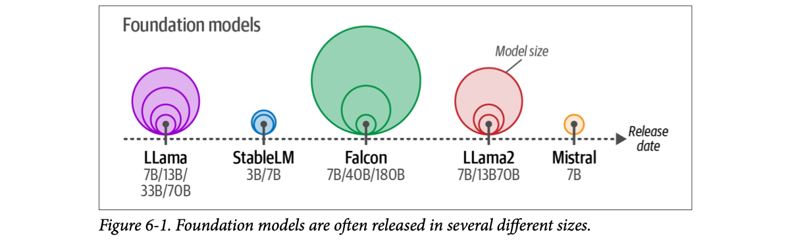
How to read this figure. Left to right is release date. Each family is a set of nested circles; bigger circle = more parameters. LLama comes in 7B/13B/33B/70B, StableLM in 3B/7B, Falcon in 7B/40B/180B (the biggest circle), Llama 2 in 7B/13B/70B, and Mistral in a single 7B size. The point: one "model" is really a family, and you pick a size as well as a family. ("B" = billion parameters.)
The book's advice: start with a small foundation model. It keeps using Phi-3-mini, which has 3.8 billion parameters. That makes it suitable for devices with up to 8 GB of VRAM (GPU memory). Scaling up to larger models tends to be a nicer experience than scaling down. Small models give a great introduction and a solid base for moving to bigger ones.
Modelled rule of thumb, not the book's: weights ≈ parameters × bytes per parameter, plus roughly 20% extra for activations and the KV cache at short context. 3.8B × 2 bytes ≈ 7.6 GB, which is why the book says Phi-3-mini fits "up to 8 GB of VRAM". Quantization (fewer bytes per parameter) is covered in Ch.12.
Learning to drive: you start on an Alto, not a 40-seater bus. Once you can handle the Alto, moving up to an SUV feels easy. Going the other way, from a bus with power steering and a helper to a tiny car with none, is jarring because you relied on things the small car does not have.
Where it breaks: a bigger model is not "harder to drive"; the real reasons to start small are cost, speed and hardware. And habits learned on a big model (it forgives vague prompts) do not carry down.
Every parameter must sit in GPU memory while the model runs. More parameters usually means better quality but more memory, more cost and slower tokens. Starting small makes your prompts work harder: if a prompt works on 3.8B, it usually works on 70B too, but not the other way round.
"Open or closed model for a new feature?" Say: "Closed APIs are usually stronger and zero-ops, so I prototype there or with a small open model to find the quality bar. Open models win on flexibility, cost at scale, data control and fine-tuning. I start with the smallest model that passes my eval set and scale up only when the evals say so." For a realtime voice agent, small models also help latency.
Model sizes and memory: Ch.12 (quantization). Model selection in depth: AI Engineering Ch.4. Phi-3 first appears in Ch.1.
The simplest way to load a model, as in earlier chapters, is the Hugging Face transformers library:
import torch
from transformers import AutoModelForCausalLM, AutoTokenizer, pipeline
# Load model and tokenizer
model = AutoModelForCausalLM.from_pretrained(
"microsoft/Phi-3-mini-4k-instruct",
device_map="cuda",
torch_dtype="auto",
trust_remote_code=True,
)
tokenizer = AutoTokenizer.from_pretrained("microsoft/Phi-3-mini-4k-instruct")
# Create a pipeline
pipe = pipeline(
"text-generation",
model=model,
tokenizer=tokenizer,
return_full_text=False,
max_new_tokens=500,
do_sample=False,
)| Piece | What it does and why |
|---|---|
AutoModelForCausalLM | Loads a causal (left-to-right, next-token) language model, the kind that generates text. |
"microsoft/Phi-3-mini-4k-instruct" | The Hugging Face model id. "mini" = 3.8B, "4k" = 4,096-token context, "instruct" = fine-tuned to follow instructions in a chat format. |
device_map="cuda" | Put the model on the NVIDIA GPU. |
torch_dtype="auto" | Use the number format the model was saved in (e.g. 16-bit), instead of forcing 32-bit and doubling memory. |
trust_remote_code=True | Allow the model repo's own Python code to run (some models ship custom code). |
AutoTokenizer | Loads the matching tokenizer: text ↔ token ids, and it also knows the chat template. |
pipeline("text-generation", …) | Wraps tokenizer + model + decoding loop into one callable pipe(...). |
return_full_text=False | Return only the newly generated text, not the prompt echoed back. |
max_new_tokens=500 | Stop after at most 500 new tokens. |
do_sample=False | No sampling: always pick the most likely next token (greedy). Plate 05 explains. |
This chapter looks more closely at the prompt template. The book revisits the Chapter 1 example, asking for a joke about chickens:
# Prompt
messages = [
{"role": "user", "content": "Create a funny joke about chickens."}
]
# Generate the output
output = pipe(messages)
print(output[0]["generated_text"])Book output: "Why don't chickens like to go to the gym? Because they can't crack the egg-sistence of it!"
The input is a list of messages, each with a role (user, later also assistant) and content. Under the hood, transformers.pipeline first converts these messages into one string in a specific prompt template. You can see that string through the tokenizer:
# Apply prompt template
prompt = pipe.tokenizer.apply_chat_template(messages, tokenize=False)
print(prompt)<s><|user|>
Create a funny joke about chickens.<|end|>
<|assistant|>You may recognise the special tokens <|user|> and <|assistant|> from Chapter 2. This template was used during the training of the model. It tells the model who said what, and the <|end|> token tells it when to stop generating. The whole prompt is passed to the LLM and processed all at once. The next chapter customises parts of this template; in this chapter the pipeline handles it.
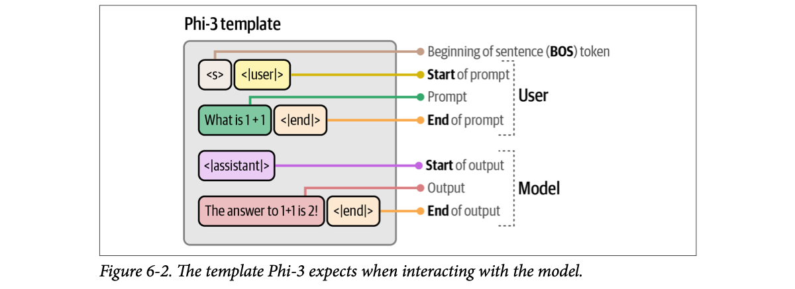
beginning-of-sentence token, <|user|> start of prompt, the prompt 'What is 1 + 1', <|end|> end of prompt, <|assistant|> start of output, the output 'The answer to 1+1 is 2!', <|end|> end of output" loading="lazy">How to read this figure. Read the grey box top to bottom as one long string. <s> is the BOS (beginning of sentence) token. The User block is <|user|> (start of prompt) + your text ("What is 1 + 1") + <|end|> (end of prompt). The Model block is <|assistant|> (start of output) + the model's answer + <|end|> (end of output). When you call the model, the string ends right after <|assistant|>, so the most likely continuation is "the assistant's reply", and the model stops when it emits <|end|>.
Colours match Figure 6-2: <s> BOS, <|user|>, <|assistant|>, <|end|>. The final <|assistant|> with nothing after it is the "your turn" cue. (In transformers this trailing cue is controlled by add_generation_prompt; the book's printed output shows it.)
A railway reservation form. You don't hand the clerk a paragraph; you fill boxes in a fixed layout: name, age, from, to. The clerk was trained on that layout, so he reads it instantly. The chat template is the model's reservation form: <|user|> box, <|assistant|> box, and <|end|> marks where each box ends.
Where it breaks: a clerk will still read a messy form; a model given the wrong template often still answers, but quality drops quietly, which is worse because you won't notice.
The model never sees "messages" or "roles". It sees one flat sequence of tokens. Instruct models were fine-tuned on conversations written in exactly this format, so the special tokens act like stage directions. Because it ends with <|assistant|>, predicting the next token means "write the assistant's turn". Because training always closed turns with <|end|>, generating that token is the natural stop signal that the decoding loop watches for. Each model family has its own template (Llama, Mistral, Phi differ), which is why you let the tokenizer apply it.
Two-turn chat: user "Hi", assistant "Hello!", user "Tell me a joke". Template becomes <s><|user|>\nHi<|end|>\n<|assistant|>\nHello!<|end|>\n<|user|>\nTell me a joke<|end|>\n<|assistant|>\n. The whole history is re-sent every turn; the model has no memory between calls. That is why long chats cost more tokens each turn.
"What is a chat template and why does it matter?" Say: "Chat APIs take role-tagged messages, but the model consumes one token stream. The template turns messages into that stream with model-specific special tokens, the same format used in instruction tuning. Getting it wrong, for example when self-hosting with a raw completion endpoint, silently degrades quality or breaks stopping. In an LLM gateway I let the serving stack apply the model's own template rather than hand-building strings."
Special tokens: Ch.2 Tokens and Embeddings. Customising the template: Ch.7. Instruction tuning that teaches the template: Ch.12. System/user prompts and templates: AI Engineering Ch.5.
Besides prompt engineering, you can control the output by adjusting model parameters (generation settings), mainly temperature and top_p. These control the randomness of the output. Part of what makes LLMs exciting is that they can give different responses to the exact same prompt.
Why? Each time an LLM generates a token, it assigns a likelihood (a probability score) to every possible token in its vocabulary. In "I am driving a…", tokens like "car" or "truck" usually score much higher than "elephant". But "elephant" is still possible, just with a much lower likelihood.
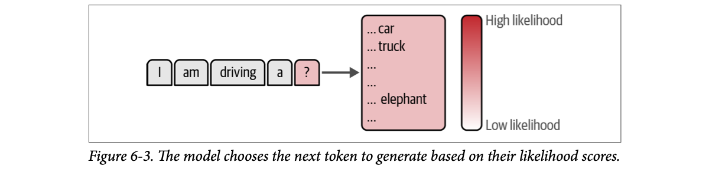
How to read this figure. The grey boxes are the input tokens; the pink "?" is the slot to fill. The list on the right is the model's ranked guess for that slot, darkest red (high likelihood) at the top ("car", "truck") fading to white (low likelihood) at the bottom ("elephant" and the long tail "…"). Generation is just: pick one token from this list, append it, repeat.
When the book loaded the model it set do_sample=False on purpose, so output is fairly consistent. That means no sampling: only the most probable next token is chosen each time (this is called greedy decoding). To use temperature and top_p, you set do_sample=True.
A chai stall owner deciding what to suggest. Greedy: he always says "cutting chai", because most people order it. Sampling: he usually says cutting chai, but sometimes suggests masala, ginger, or, once in a blue moon, rose milk. Nothing is banned, just weighted by how often people like it.
Where it breaks: the owner thinks about the whole order; an LLM picks one token at a time and can't go back, so one unlucky early pick shapes everything after it.
The model's last layer outputs a raw score (a logit) per vocabulary token. A softmax turns those scores into probabilities that sum to 1. The decoding strategy then picks one token. Greedy takes the argmax; sampling draws from the distribution. Temperature, top_p and top_k all act here, between the probabilities and the pick, without touching the model's weights. (Ch.3 shows this "LM head" step.)
Where the probabilities come from: Ch.3 Looking Inside LLMs (the LM head and decoding). Sampling in depth: AI Engineering Ch.2.
"Greedy decoding or sampling?" Say: "Greedy (do_sample=False, or temperature 0) picks the most likely token every step: repeatable and good for extraction, classification and tool arguments, but it can be bland or repetitive in long text. Sampling draws from the distribution, which gives variety and is needed for things like self-consistency. The default I ship depends on whether code or a human consumes the output."
Temperature controls the randomness or "creativity" of the text. It sets how likely the model is to choose less probable tokens. The idea: a temperature of 0 gives the same response every time because it always picks the most likely word. A higher value lets less probable words be generated.
So a higher temperature (e.g. 0.8) generally gives more diverse output, and a lower one (e.g. 0.2) gives more deterministic output.
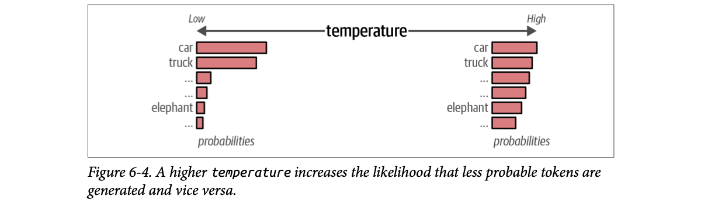
How to read this figure. Same candidate tokens, two settings. On the left (low temperature) "car" and "truck" have long bars and the rest are tiny: the pick is almost always car or truck. On the right (high temperature) the bars are almost equal: "elephant" now has a real chance. Temperature does not change the order of tokens, only how peaked or flat the distribution is.
# Using a high temperature
output = pipe(messages, do_sample=True, temperature=1)
print(output[0]["generated_text"])Book output: "Why don't chickens like to go on a rollercoaster? Because they're afraid they might suddenly become chicken-soup!"
Every time you rerun this, the output changes. Temperature brings in stochastic (random) behaviour, because the model now picks tokens at random (weighted).
Modelled logits, not from the book. Probability = softmax(logit / T). T → 0 becomes greedy (always "car"). T = 1 uses the model's own distribution. T > 1 flattens it.
Logits: car 4.0, truck 3.0, elephant 0.5. At T = 1: e4=54.6, e3=20.1, e0.5=1.65 → probabilities 0.71, 0.26, 0.02. At T = 0.5 (divide logits by 0.5 → 8, 6, 1): 0.88, 0.12, 0.0001. At T = 2 (→ 2, 1.5, 0.25): 0.53, 0.32, 0.15. Elephant goes from 1 in 10,000 to about 1 in 7.
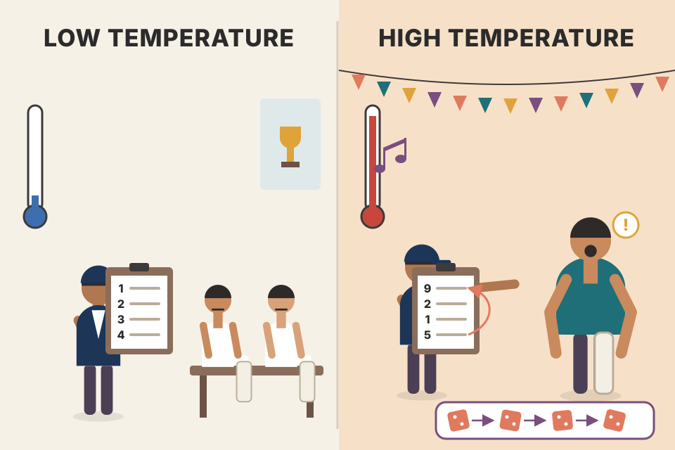
A cricket captain setting the batting order. Low temperature: always the same top order, by the book. High temperature: he sometimes sends a tail-ender in at No. 3 for a surprise. Fun in a T20 exhibition match; risky in a Test final.
Where it breaks: a captain decides once per match; temperature applies at every single token, so small randomness adds up over a long answer.
Dividing logits by T before softmax stretches (T < 1) or squashes (T > 1) the gaps between them. Because softmax is exponential, small gaps in logits become big gaps in probability at low T. At T = 0 the division is undefined, so libraries treat it as greedy.
Even at temperature 0, hosted APIs are not always perfectly repeatable: batched GPU math and floating-point order can flip near-ties. Don't build a system that depends on byte-identical outputs.
"What does temperature do, and what would you set?" Say: "It scales the logits before softmax: low temperature sharpens the distribution toward the top token, high temperature flattens it. For extraction, classification, tool-calling and anything parsed by code I use 0 or close to it; for brainstorming I go higher. In a voice agent I keep it low for reliable tool calls but slightly up for natural phrasing."
The cut-off knobs: plate 07. Why diversity matters for voting: plate 17. Softmax and the LM head: Ch.3. Sampling and temperature: AI Engineering Ch.2.
top_p, also called nucleus sampling, controls which subset of tokens (the nucleus) the LLM may consider. It adds tokens, most likely first, until their cumulative probability reaches the top_p value. With top_p=0.1 it considers tokens only until their probabilities add up to 0.1. With top_p=1 it considers all tokens.
Lowering the value means fewer tokens and generally less "creative" output; raising it lets the LLM choose from more tokens.
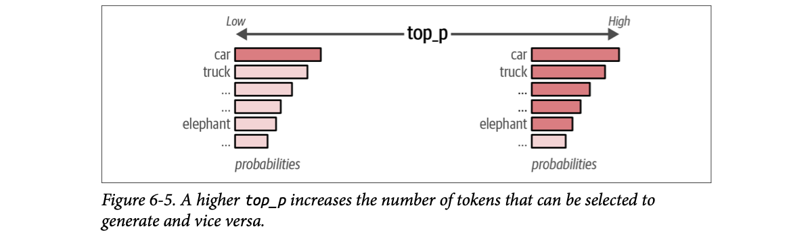
How to read this figure. Unlike Figure 6-4, the bar lengths are the same on both sides: top_p does not reshape probabilities. What changes is the colour: dark bars are "allowed", pale bars are cut off. At low top_p only "car" is dark; at high top_p car, truck, the "…" tokens and elephant are all dark, and only the last tail token is pale.
Similarly, top_k controls exactly how many tokens the LLM may consider. With top_k=100, the LLM only considers the top 100 most probable tokens.
# Using a high top_p
output = pipe(messages, do_sample=True, top_p=1)
print(output[0]["generated_text"])Book output: "Why don't chickens make good comedians? Because their 'jokes' always 'feather' the truth!"
Order used here (common in libraries such as transformers): apply temperature → keep top_k → keep the smallest set whose cumulative probability reaches top_p → renormalise → draw. Greyed bars are cut. Numbers are modelled.
Together these give a sliding scale between creative (high temperature and top_p) and predictable (low temperature and top_p). Table 6-1 gives examples:
| Example use case | temperature | top_p | Description (book) |
|---|---|---|---|
| Brainstorming session | High | High | High randomness with a large pool of potential tokens. Results are highly diverse, often very creative and unexpected. |
| Email generation | Low | Low | Deterministic output with highly probable predicted tokens. Predictable, focused, conservative outputs. |
| Creative writing | High | Low | High randomness with a small pool of potential tokens. Creative outputs that still remain coherent. |
| Translation | Low | High | Deterministic output with highly probable predicted tokens. Coherent output with a wider range of vocabulary, giving linguistic variety. |
Ordering at a kirana shop with a long shelf. top_k = "only look at the first 5 brands on the shelf". top_p = "keep picking the best sellers until they cover 90% of what people buy, ignore the rest". Temperature = how adventurous you feel picking among those. top_k is a fixed count; top_p adapts: if one brand sells 95%, top_p=0.9 leaves only that one.
Where it breaks: a shelf has a few dozen items; a vocabulary has 30,000–200,000 tokens, and the "tail" is enormous, which is exactly why cutting it matters.
top_k and top_p are truncation methods: they delete the long tail of junk tokens so a random draw cannot land on something silly. top_p is adaptive: when the model is confident, the nucleus is tiny (maybe 1 token); when it is unsure, the nucleus grows. top_k uses the same count regardless of confidence. Temperature reshapes; top_p/top_k cut.
"Difference between temperature, top_p and top_k?" Say: "Temperature rescales the whole distribution; top_k keeps a fixed number of top tokens; top_p keeps the smallest set whose probabilities add up to p, so it adapts to the model's confidence. Usually you tune temperature or top_p, not both aggressively. With greedy decoding none of them apply."
Constraining the pool even harder with grammars: plate 21. Self-consistency needs sampling diversity: plate 17. Sampling strategies: AI Engineering Ch.2.
Prompt engineering is an essential part of working with text-generating LLMs. By carefully designing prompts you guide the LLM toward the response you want. Prompts can be questions, statements or instructions; the main goal is always to elicit a useful response.
It is more than designing effective prompts. The book names three uses:
It is an iterative process of prompt optimisation that needs experimentation. There is not, and probably never will be, a perfect prompt design. The section covers common methods plus small tips and tricks to see what effect certain prompts have. These skills help you understand what LLMs can do and are the foundation of working with them. It starts with: what should be in a prompt?
Briefing a new intern. Your first brief is vague; you see the result, add "keep it to one page", see it again, add "use the company template". Nobody writes the perfect brief on day one; you converge by trying.
Where it breaks: an intern learns and remembers; the model starts fresh on every call, so the "learning" must live in the prompt you keep.
"How do you approach prompt engineering on a product?" Say: "As an experiment loop, not a one-off. I keep prompts in version control, build a small eval set of real inputs, change one component at a time and measure. Prompts also carry guardrails, and an LLM prompt can itself be the evaluator (LLM-as-a-judge)."
Evaluation with prompts: AI Engineering Ch.3. Prompt engineering at length: AI Engineering Ch.5.
The model's weights are fixed; the prompt is the only part you control per request. Because the model is a learned function nobody fully understands, the effect of a wording change can't be computed in advance, only observed. That's why the book calls it iterative and experimental, and why the same skill doubles as an evaluation tool (a prompt that asks a model to judge output) and a safety tool (a prompt that sets rules).
An LLM is a prediction machine. Given an input (the prompt) it tries to predict the words that might follow. At its core, a prompt can be just a few words and still get a response.
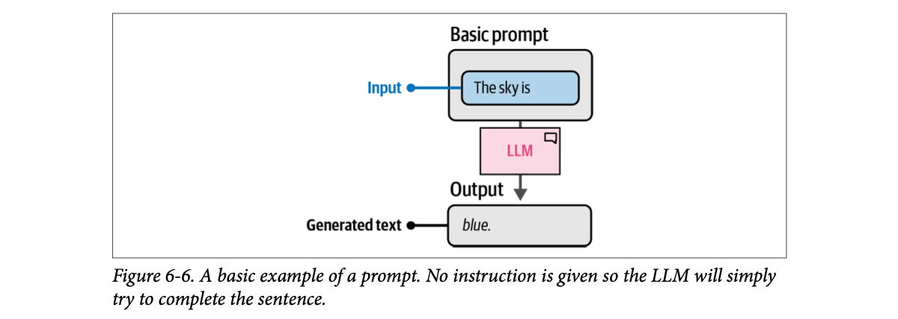
How to read this figure. Input "The sky is" (blue box) → LLM → generated text "blue." There is no task, just a sentence to finish. The model does the one thing it always does: continue the text.
That works as a demo but fails to complete a specific task. Normally you ask a specific question or give a task, which needs a more structured prompt. For example, ask the LLM to classify a sentence as positive or negative. Now the prompt has two components: the instruction and the data it refers to.
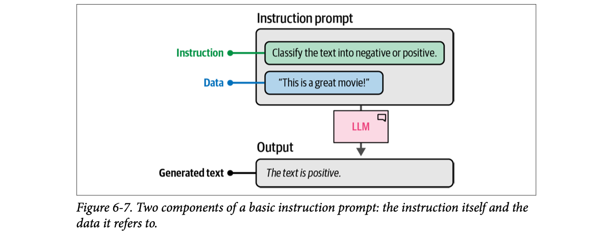
How to read this figure. Green = instruction ("Classify the text into negative or positive."), blue = data ("This is a great movie!"). The model answers with a full sentence, "The text is positive." Correct, but awkward to parse in code.
More complex cases need more components. To make sure the model outputs only "negative" or "positive", add output indicators. The book prefixes the sentence with Text: and adds Sentiment: at the end, which stops the model from writing a full sentence; the structure signals that one word is expected. The model was probably not trained on these exact components, but it saw enough instructions to generalise to this structure.
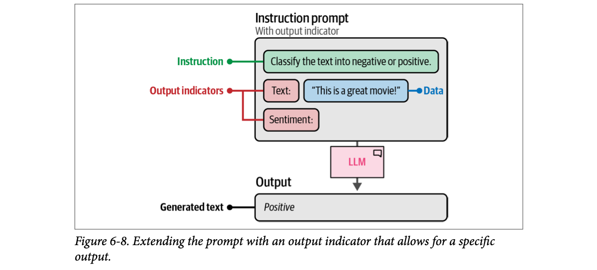
How to read this figure. Red boxes are the output indicators: Text: labels the data and Sentiment: is left open as the last line. The model fills the blank after "Sentiment:" with a single word, "Positive". Compare with Figure 6-7: same task, much tighter output.
You can keep adding or updating parts until you get the response you want: more examples, a more detailed use-case description, extra context, and so on. These components are examples, not a fixed list; creativity in designing them is key. A prompt is one piece of text, but it helps to think of it as pieces of a larger puzzle. Ask yourself: Have I described the context of my question? Does the prompt have an example of the output?
Filling a bank deposit slip. "Amount:" with a blank after it tells you exactly what goes there: a number, not a story. Sentiment: is that kind of labelled blank for the model.
Where it breaks: the slip physically limits what you can write; the model could still write "Positive, because..." An output indicator nudges, it does not enforce. Enforcement comes in plate 21.
The model continues text in the most likely way. After "Sentiment:", the most common continuation in training data (forms, datasets, labelled examples) is one short label. You are not commanding the model; you are making the answer you want the most probable continuation.
"Your LLM classifier sometimes returns sentences instead of labels. Fix?" Say: "First the prompt: name the allowed labels, add output indicators like 'Sentiment:', add a few examples, set temperature to 0. Then don't trust it: parse and validate, retry or map unknowns. If it must be guaranteed, use constrained decoding or structured outputs so only the label tokens can be generated."
Prompting comes in many flavours, from discussing philosophy with the LLM to role-playing your favourite superhero. But most often it is used to make the LLM answer a specific question or resolve a task. This is instruction-based prompting. Figure 6-9 shows use cases where it matters; supervised classification (the previous example) is one of them.
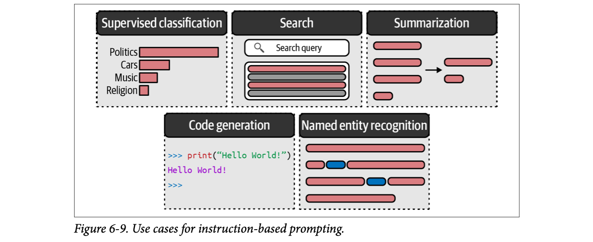
How to read this figure. Five tasks, each drawn as its typical output: supervised classification (scores per class: Politics, Cars, Music, Religion), search (a query and a ranked list, some results highlighted as relevant), summarization (four lines become two), code generation (a Python print("Hello World!") and its output) and named entity recognition (NER: blue spans inside sentences mark entities). One model, many jobs, chosen purely by the instruction.
Each task needs a different prompt format, i.e. a different question. Asking for a summary will not suddenly produce a classification. Figure 6-10 shows example prompts.
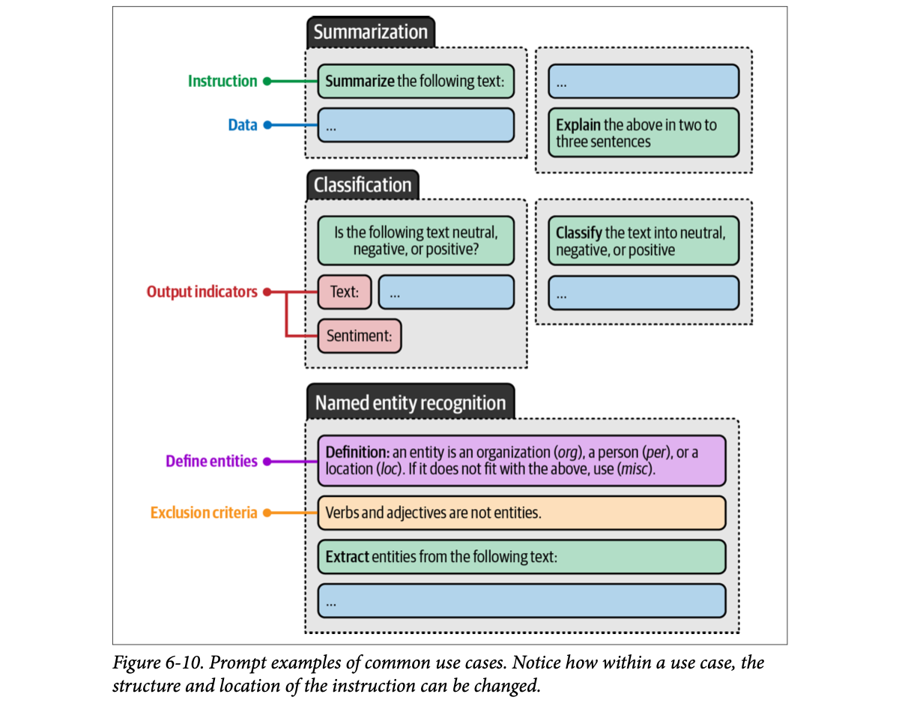
How to read this figure. Colours are prompt parts: green = instruction, blue = data, red = output indicators, purple = definitions, orange = exclusion criteria. Summarization: left, "Summarize the following text:" then data; right, data first, then "Explain the above in two to three sentences". Classification: left, a question plus Text:/Sentiment: indicators; right, "Classify the text into neutral, negative, or positive" then data. NER stacks four parts: a definition (an entity is an organization (org), a person (per), or a location (loc); otherwise use (misc)), an exclusion criterion ("Verbs and adjectives are not entities."), the instruction "Extract entities from the following text:", and the data. Point: the same task can put the instruction before or after the data.
The tasks need different instructions, but the techniques to improve output overlap a lot. A non-exhaustive list:
Specificity is arguably the most important. By restricting and specifying what to generate, there is less chance the model produces something unrelated. If you drop "in two to three sentences", it might write whole paragraphs. Like human conversation: without specific instructions or context, it is hard to work out what the task actually is.
The U shape follows the "lost in the middle" finding the book cites (footnote 1); the exact numbers on this curve are modelled for illustration, not from the paper.
A long WhatsApp voice note from your mother: you remember "call me back" at the start and "buy milk" at the end, but the bit in the middle about the electricity bill slips away. Put the thing that matters first or last.
Where it breaks: you can replay the note; the model does "see" every token, it just weighs the middle less well in practice. Newer long-context models reduce, but do not remove, this effect.
Specificity shrinks the space of "likely continuations" so the right one wins. The "I don't know" escape gives the model a legal, probable answer when it lacks knowledge, instead of forcing it to invent one. Position effects come from how models were trained and how attention spreads over long inputs: start and end positions get used more reliably than the middle.
Vague: "Summarise this call transcript." → 4 paragraphs, mixed facts. Specific: "Summarise the call transcript below in at most 3 bullet points for a support agent. Only use facts stated in the transcript; if the customer's order id is not mentioned, write 'order id: unknown'. [transcript]. Remember: max 3 bullets." Specificity (length, audience), hallucination guard ("unknown"), and order (instruction first, reminder at the end).
"How do you reduce hallucination with prompting alone?" Say: "Be specific, give the model an explicit 'I don't know' path, ground it with provided context and tell it to use only that, and put the key instruction at the start or end because of primacy/recency. Prompting reduces hallucination but doesn't remove it, so in a RAG memory system I also check answers against retrieved sources."
Grounding answers in retrieved text: Ch.8 Semantic Search and RAG. NER and classification with representation models: Ch.4. Hallucination in depth: AI Engineering Ch.2.
On the surface, a good prompt seems easy: ask a specific question, be accurate, add some examples, done. But prompting gets complex quickly and is an often-underestimated part of using LLMs.
This part goes through several advanced techniques, in this order:
Learning to cook: first you follow one recipe card well (basic prompts). Then you learn to adjust spice levels and plating (components), cook from watching someone (examples), run a multi-course meal in stages (chains), and finally taste and correct as you go (reasoning).
Where it breaks: a cook gets better with practice; the model doesn't. All the improvement lives in your prompts and pipeline.
Each technique gives the model more useful context or more chances: more components = more constraints on the output; examples = a pattern to copy; chains = smaller tasks per call; reasoning prompts = more tokens (compute) spent before the answer.
The same ladder in AI Engineering Ch.5; chains grow into agents in Ch.7.
The first example had three components: instruction, data and output indicators. No prompt is limited to these; you can build it up as complex as you like. Common advanced components:
| Component | What it is (book) |
|---|---|
| Persona | The role the LLM should take on. E.g. "You are an expert in astrophysics" for an astrophysics question. |
| Instruction | The task itself. As specific as possible; leave little room for interpretation. |
| Context | Extra information about the problem or task. Answers "What is the reason for the instruction?" |
| Format | The format the LLM should use for its output. Without it, the LLM makes up a format, which is troublesome in automated systems. |
| Audience | Who the text is for; also sets the level. For education, ELI5 ("Explain it like I'm 5") is often helpful. |
| Tone | The tone of voice. A formal email to your boss should not be informal. |
| Data | The main data related to the task. |
Figure 6-11 extends the earlier prompt (here a summarisation task) with all these components.
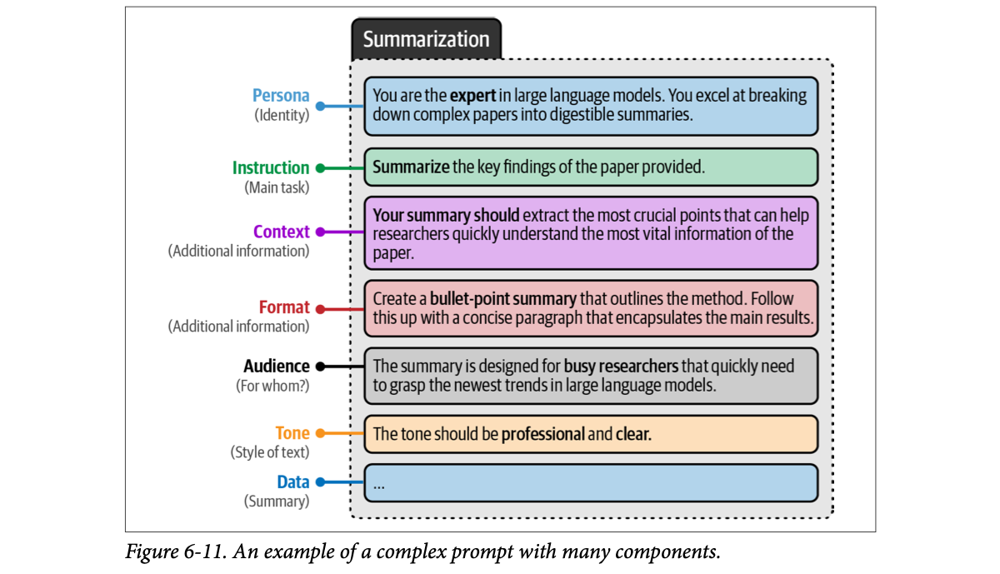
How to read this figure. Each coloured row is one component, labelled on the left with its job in brackets: Persona (identity): "You are the expert in large language models. You excel at breaking down complex papers into digestible summaries." Instruction (main task): "Summarize the key findings of the paper provided." Context (additional information): "Your summary should extract the most crucial points…". Format: "Create a bullet-point summary that outlines the method. Follow this up with a concise paragraph…". Audience (for whom?): "busy researchers…". Tone (style of text): "professional and clear". Data: the paper text ("…"). Stacked together they form one prompt string.
This shows the modular nature of prompting: add and remove components freely and judge the effect. You can slowly build up a prompt and explore the effect of each change (Figure 6-12).
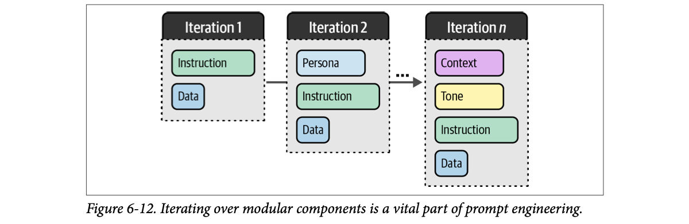
How to read this figure. Iteration 1 = Instruction + Data. Iteration 2 = Persona + Instruction + Data. "…" Iteration n = Context + Tone + Instruction + Data: Persona has been dropped again and new parts added. Iteration is not only adding; it is adding, removing and reordering.
Changes are not only adding/removing components. Their order also affects quality (recall primacy and recency). So experimentation is vital: prompting is an iterative cycle of experiments. The book's code builds the prompt from variables so you can add and remove parts easily:
# Prompt components
persona = "You are an expert in Large Language models. You excel at breaking down complex papers into digestible summaries.\n"
instruction = "Summarize the key findings of the paper provided.\n"
context = "Your summary should extract the most crucial points that can help researchers quickly understand the most vital information of the paper.\n"
data_format = "Create a bullet-point summary that outlines the method. Follow this up with a concise paragraph that encapsulates the main results.\n"
audience = "The summary is designed for busy researchers that quickly need to grasp the newest trends in Large Language Models.\n"
tone = "The tone should be professional and clear.\n"
text = "MY TEXT TO SUMMARIZE"
data = f"Text to summarize: {text}"
# The full prompt - remove and add pieces to view its impact on the generated output
query = persona + instruction + context + data_format + audience + tone + dataWhat each part does: each component is a plain string ending in \n so they stack as lines. data uses an f-string to wrap your text with a label (an output-indicator-like prefix). query is simple string concatenation: delete a term to remove a component, or swap terms to reorder. The variable is named data_format rather than format, probably to avoid shadowing Python's built-in format (the book doesn't say).
There are many other components you could add, including creative ones such as emotional stimuli (e.g. "This is very important for my career." from the EmotionPrompt paper, footnote 2). Part of the fun is being creative to find which combination helps your use case; there are few constraints on developing a format that works for you.
In a way it is an attempt to reverse engineer what the model learned and how it responds to certain prompts. But note: some prompts work better for some models than others, because their training data differ or they were trained for different purposes.
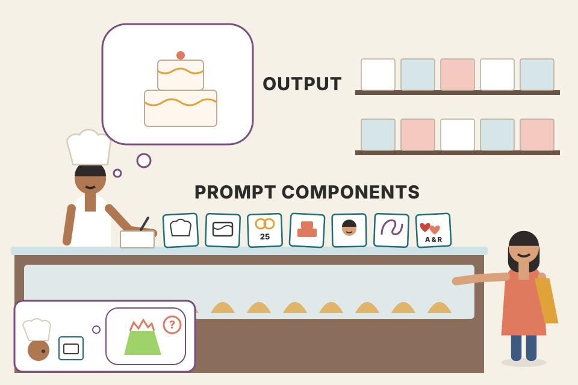
Ordering a custom cake at a bakery: persona ("you're our wedding-cake specialist"), instruction ("make a cake"), context ("it's for my parents' 25th anniversary"), format ("two tiers, round"), audience ("guests include kids"), tone ("elegant, not cartoonish"), data ("their names: Asha & Ravi"). Leave one out and the baker fills the gap with a guess.
Where it breaks: the baker asks follow-up questions; the model just guesses silently, so missing parts show up as quietly wrong output.
Every component conditions the next-token distribution. Persona shifts vocabulary and depth toward text written by experts; audience and tone shift register; format makes structured continuations most likely. Because components interact (and models differ), you can't reason your way to the best prompt; you measure.
"How do you manage prompts in production?" Say: "As modular templates: system persona, task, context, output format, then the data slot. I keep them versioned like code, A/B test component changes against an eval set, and keep the format section strict because downstream code parses it. When switching models I re-run the evals, since prompts don't transfer perfectly."
Templates and LangChain prompt templates: Ch.7. System prompts, personas, prompt versioning: AI Engineering Ch.5. Prompt templates in a RAG pipeline: LLM Engineer's Handbook Ch.9.
So far we described the task. Accurate descriptions help, but you can go further: instead of describing the task, show it. Give the LLM examples of exactly what you want. This is called in-context learning: you provide the model with correct examples inside the prompt (footnote 3: Brown et al., "Language models are few-shot learners", 2020, the GPT-3 paper).
It comes in forms based on how many examples you show:
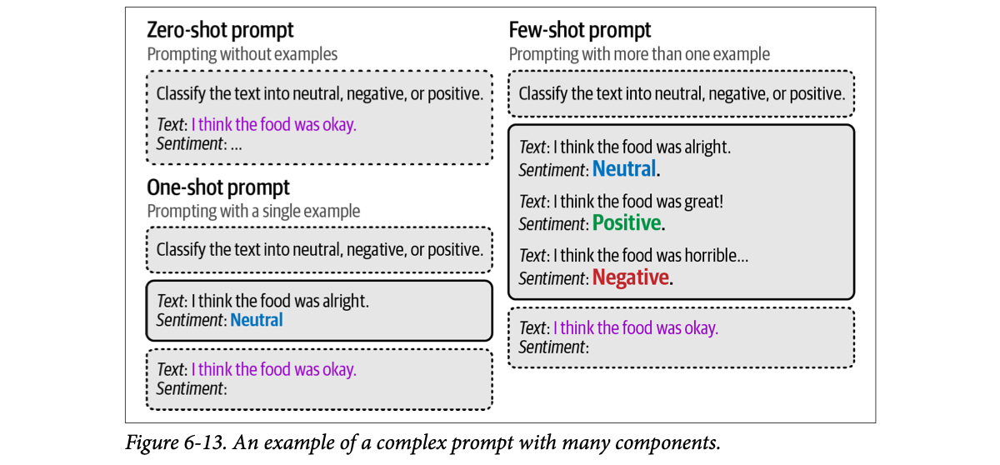
How to read this figure. (The book's caption here repeats Figure 6-11's caption; it looks like a copy slip. The picture itself is about zero/one/few-shot.) Each prompt asks to "Classify the text into neutral, negative, or positive" for the purple text "I think the food was okay." Zero-shot (top left): instruction, then Text:/Sentiment: only. One-shot (bottom left): one solved example in a solid box, "I think the food was alright." → Neutral. Few-shot (right): three solved examples, alright → Neutral, great! → Positive, horrible… → Negative, then the real question with Sentiment: left blank.
The book adapts a phrase: "an example is worth a thousand words". Examples show directly what the LLM should do and how.
The book's demo is taken from the original paper (footnote 4): make the model write a sentence using a made-up word. To improve the result, show one example of a good sentence with a made-up word. To do this you must separate your question (user) from the answers given by the model (assistant):
# Use a single example of using the made-up word in a sentence
one_shot_prompt = [
{
"role": "user",
"content": "A 'Gigamuru' is a type of Japanese musical instrument. An example of a sentence that uses the word Gigamuru is:"
},
{
"role": "assistant",
"content": "I have a Gigamuru that my uncle gave me as a gift. I love to play it at home."
},
{
"role": "user",
"content": "To 'screeg' something is to swing a sword at it. An example of a sentence that uses the word screeg is:"
}
]
print(tokenizer.apply_chat_template(one_shot_prompt, tokenize=False))<s><|user|>
A 'Gigamuru' is a type of Japanese musical instrument. An example of a sentence that uses the word Gigamuru is:<|end|>
<|assistant|>
I have a Gigamuru that my uncle gave me as a gift. I love to play it at home.<|end|>
<|user|>
To 'screeg' something is to swing a sword at it. An example of a sentence that uses the word screeg is:<|end|>
<|assistant|>The roles matter. Without separating user and assistant, it would look as if we were talking to ourselves. The example is written as a fake earlier assistant turn, so the model sees "this is how I answered last time". Generating:
# Generate the output
outputs = pipe(one_shot_prompt)
print(outputs[0]["generated_text"])Book output: "During the intense duel, the knight skillfully screeged his opponent's shield, forcing him to defend himself." It correctly generated the answer.
Like every component, one- or few-shot prompting is not the be-all and end-all. It is one piece of the puzzle that adds to the descriptions you gave. The model can still "choose", through random sampling, to ignore the instructions.
Teaching a new cook at a dhaba how you want the dal: instead of explaining "medium thick, not too much tadka", you put one finished bowl in front of him and say "like this". He copies the look and consistency far better than any description.
Where it breaks: the cook actually learns and will remember tomorrow. In-context "learning" changes no weights; the model forgets as soon as the prompt is gone, so the examples must be sent every call (paying their tokens every time).
The examples sit in the context window and the model's attention can copy their pattern: format, length, label set, style. No gradient update happens; that's why it's "in-context". The examples also implicitly define the label space (Neutral/Positive/Negative) and the output format (one word, capitalised), which descriptions often leave fuzzy.
Intent detection for a support bot. Zero-shot: "Classify the intent: refund, delivery, other. Message: 'where is my parcel'" → the model may answer "This is about delivery tracking." Few-shot with three user/assistant pairs ("I want my money back" → refund, "parcel not arrived" → delivery, "change my password" → other) → it answers just delivery. Cost: about 40 extra tokens per call for the examples (modelled estimate).
"Few-shot vs fine-tuning?" Say: "Few-shot is instant, needs no training and is easy to change, but costs tokens on every request and the model may still ignore it. Fine-tuning bakes the behaviour in, cutting prompt length and improving consistency, but needs data and a training pipeline. I start with few-shot, and fine-tune when examples are long, volume is high, or consistency is not good enough."
Using examples to control output format: plate 20. Examples as reasoning demos: plate 16. Fine-tuning instead: Ch.12. In-context learning and few-shot: AI Engineering Ch.5.
So far we split a problem into components within one prompt. That may not be feasible for very complex prompts or use cases. Instead, split it between prompts: take the output of one prompt and use it as input for the next. This creates a continuous chain of interactions that solves the problem.
Example: create a product name, slogan and sales pitch from a list of product features. You could ask for all three at once, but instead build a sequential pipeline: make the name; then use name + features to make the slogan; finally use features + name + slogan to make the sales pitch.
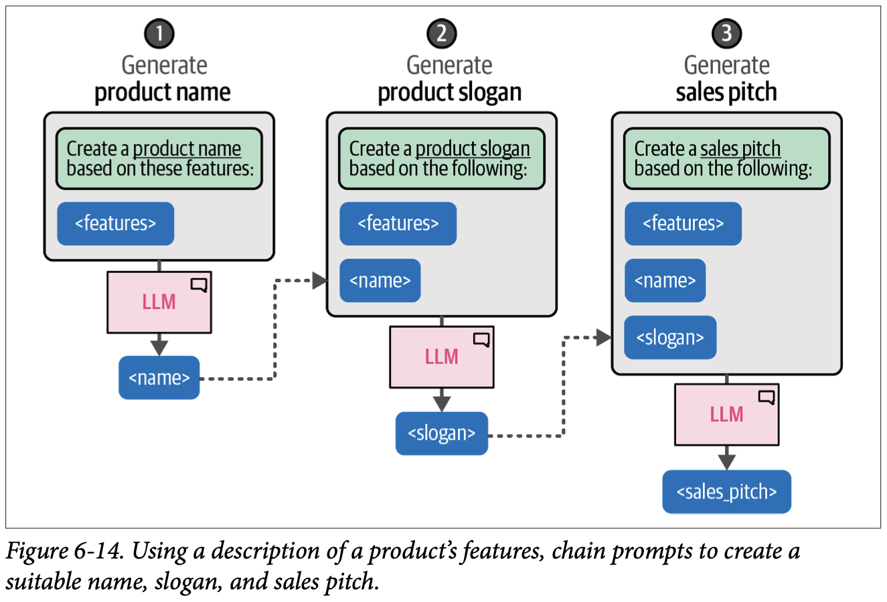
How to read this figure. Three columns = three LLM calls. Step 1: "Create a product name based on these features: <features>" → LLM → <name>. The dotted arrow carries <name> into step 2's prompt with the features → <slogan>. Step 3's prompt gets features, name and slogan → <sales_pitch>. Each prompt grows by the previous outputs.
Chaining lets the LLM spend more time on each individual question instead of tackling the whole problem at once. The book's small version first creates a name and slogan for a chatbot:
# Create name and slogan for a product
product_prompt = [
{"role": "user", "content": "Create a name and slogan for a chatbot that leverages LLMs."}
]
outputs = pipe(product_prompt)
product_description = outputs[0]["generated_text"]
print(product_description)Book output: Name: 'MindMeld Messenger' · Slogan: 'Unleashing Intelligent Conversations, One Response at a Time'
# Based on a name and slogan for a product, generate a sales pitch
sales_prompt = [
{"role": "user", "content": f"Generate a very short sales pitch for the following product: '{product_description}'"}
]
outputs = pipe(sales_prompt)
sales_pitch = outputs[0]["generated_text"]
print(sales_pitch)Book output (shortened): "Introducing MindMeld Messenger - your ultimate communication partner! Unleash intelligent conversations with our innovative AI-powered messaging platform. … Try it now and experience the future of messaging!"
The glue is the f-string: {product_description}, the first call's output, is pasted into the second prompt. It takes two calls, but a major benefit is that each call can have different parameters. For instance, the name and slogan need few tokens, while the pitch can be much longer.
Chaining fits many use cases, including:
The next chapter automates this and goes beyond chaining LLMs: chaining memory, tool use and more. Before that, this chapter explores more complex chaining-style methods: self-consistency, chain-of-thought and tree-of-thought.
A wedding planner doesn't ask one person to "do the wedding". First the date, then the venue (needs the date), then the caterer (needs date and venue and guest count). Each step is simpler and uses the decisions before it.
Where it breaks: a mistake early in the chain (a bad name) flows into every later step; there is no automatic going back unless you add a validation step.
One big prompt forces the model to plan, write and format in a single pass with one set of settings. A chain gives each sub-task its own focused prompt, its own max_new_tokens and temperature, and an inspectable intermediate result you can log, test and validate. The cost is latency (sequential calls) and more tokens; parallel branches can win back latency.
Voice-agent call summary chain: (1) extract structured facts from the transcript at T = 0 with short output; (2) validate the JSON in code; (3) write a friendly summary from the facts at T = 0.7 with longer output. If step 2 fails, retry only step 1. Three calls, but each is cheap, focused and testable.
"One big prompt or a chain?" Say: "I chain when the task has natural stages, when stages need different settings or models, or when I want to validate intermediate outputs. The trade-off is latency and error propagation, so I parallelise independent branches and add checks between steps. That pattern grows into agent workflows with tools and memory."
Automated chains with LangChain, memory and agents: Ch.7. Response validation: plate 19. Agents and planning: AI Engineering Ch.6.
The earlier sections built prompts by iteration. Advanced techniques like prompt chaining were the first step toward enabling complex reasoning with generative models.
Reasoning is a core part of human intelligence, and LLMs show emergent behaviour that often resembles reasoning. The book stresses "resemble": at the time of writing, these models are generally considered to show this behaviour through memorisation of training data and pattern matching. Still, the output can be complex, and even if it is not "true" reasoning, it is called reasoning capabilities. So we work with the LLM through prompt engineering to mimic reasoning processes and improve output.
To simplify, human reasoning can be divided into two thinking processes (footnote 5: Kahneman, Thinking, Fast and Slow, 2011):
If we could give a model the ability to mimic self-reflection, we would essentially be emulating System 2 thinking. The next plates explore techniques that try to mimic these human thought processes to improve output.
"What is 7 × 8?" – you just know: 56 (System 1). "What is 17 × 24?" – you slow down, write 17 × 20 = 340, 17 × 4 = 68, add: 408 (System 2). An LLM by default answers everything in the "just know" mode, one token at a time.
Where it breaks: humans choose when to slow down; a plain LLM doesn't, so the prompt has to make it slow down.
An LLM does a fixed amount of computation per token. A hard question answered in one token gets one token's worth of compute. Prompting for written-out steps lets the model spread work over many tokens, each one conditioned on the steps before. That's the bridge from System 1 machinery to System-2-like behaviour.
Since the book (2024), "reasoning models" (e.g. OpenAI o1/o3, DeepSeek-R1) are trained with reinforcement learning to produce long internal chains of thought before answering. The prompting ideas below are the ancestors of that training-time approach.
"Do LLMs actually reason?" Say: "The careful answer, which is the book's too, is that they produce output that resembles reasoning, largely through patterns learned from training data. Whether that's 'true' reasoning is debated. Practically, prompting techniques like chain-of-thought make them behave more like slow, deliberate System 2 thinking and measurably improve multi-step tasks, but I still verify outputs, because a fluent chain of steps can be wrong."
Chaining as the first step: plate 14. The techniques: CoT, self-consistency, tree-of-thought. Reasoning and planning in agents: AI Engineering Ch.6.
The first major step toward complex reasoning in generative models was chain-of-thought (CoT; footnote 6: Wei et al., 2022). It aims to have the model "think" first instead of answering directly without reasoning.
It provides examples in the prompt that demonstrate the reasoning the model should do before answering. These reasoning steps are called "thoughts". This helps a lot for tasks with more complexity, like math questions. Adding reasoning lets the model distribute more compute over the reasoning process. Instead of computing the whole solution from a few tokens, each extra reasoning token helps the LLM stabilise its output.
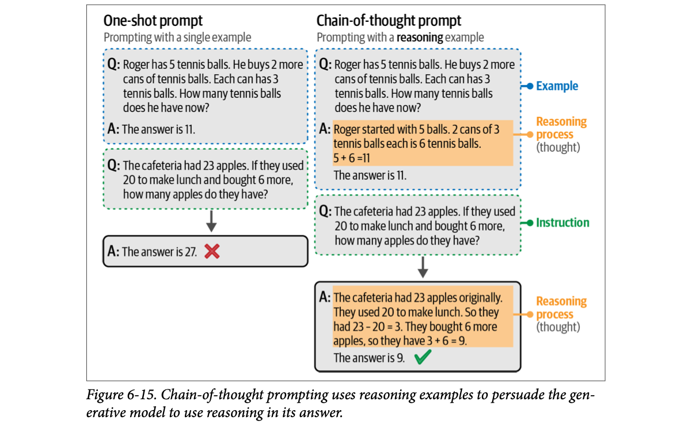
How to read this figure. Two prompts with the same tennis-ball example and the same cafeteria question. Left (one-shot): the example answer is only "The answer is 11." The model copies that answer-only style and blurts "The answer is 27." ✗, a wrong number with no working shown. Right (chain-of-thought): the example's answer contains an orange reasoning process (thought): "Roger started with 5 balls. 2 cans of 3 tennis balls each is 6 tennis balls. 5 + 6 = 11." The model copies that style: "23 − 20 = 3 … 3 + 6 = 9. The answer is 9." ✓. Labels on the right: Example (blue), Instruction (green), Reasoning process (orange).
The book uses the paper's example:
# Answering with chain-of-thought
cot_prompt = [
{"role": "user", "content": "Roger has 5 tennis balls. He buys 2 more cans of tennis balls. Each can has 3 tennis balls. How many tennis balls does he have now?"},
{"role": "assistant", "content": "Roger started with 5 balls. 2 cans of 3 tennis balls each is 6 tennis balls. 5 + 6 = 11. The answer is 11."},
{"role": "user", "content": "The cafeteria had 23 apples. If they used 20 to make lunch and bought 6 more, how many apples do they have?"}
]
# Generate the output
outputs = pipe(cot_prompt)
print(outputs[0]["generated_text"])Book output: "The cafeteria started with 23 apples. They used 20 apples, so they had 23 - 20 = 3 apples left. Then they bought 6 more apples, so they now have 3 + 6 = 9 apples. The answer is 9."
The model doesn't just give the answer; it explains first, and can use the knowledge it has generated so far to compute the final answer. It's a one-shot prompt (plate 13), except the example's answer includes the reasoning.
CoT needs one or more reasoning examples, which the user might not have. Instead, simply ask the model to reason: zero-shot chain-of-thought (footnote 7: Kojima et al., "Large language models are zero-shot reasoners", 2022). Many phrasings work; a common and effective one is "Let's think step-by-step".
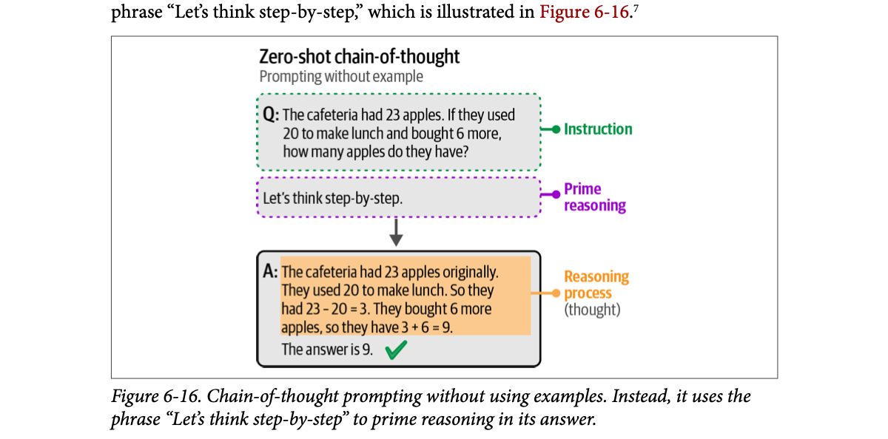
How to read this figure. Green box = the question (instruction). Purple box = "Let's think step-by-step." labelled prime reasoning. The answer (bottom) contains the orange reasoning and ends "The answer is 9." ✓. No example was given; the trigger phrase alone produced the reasoning.
# Zero-shot chain-of-thought
zeroshot_cot_prompt = [
{"role": "user", "content": "The cafeteria had 23 apples. If they used 20 to make lunch and bought 6 more, how many apples do they have? Let's think step-by-step."}
]
# Generate the output
outputs = pipe(zeroshot_cot_prompt)
print(outputs[0]["generated_text"])Book output: "Step 1: Start with the initial number of apples, which is 23. Step 2: Subtract the number of apples used to make lunch, which is 20. So, 23 - 20 = 3 apples remaining. Step 3: Add the number of apples bought, which is 6. So, 3 + 6 = 9 apples. The cafeteria now has 9 apples."
Same reasoning, no examples needed. This is why "show your work" matters in calculations: by working through the reasoning, the LLM uses the previously generated information as a guide to the final answer.
Tip from the book: you are not stuck with that exact phrase. Alternatives include "Take a deep breath and think step-by-step" and "Let's work through this problem step-by-step" (footnote 8: Yang et al., "Large language models as optimizers", 2023).
A school maths exam where "show your working" earns marks. The student who writes each step catches "23 − 20 = 3" before adding 6; the one who writes only the final number is more likely to blurt 27.
Where it breaks: the written steps of an LLM are not guaranteed to be the "real" reason it reached the answer; they're text it generated, which happens to help the next tokens.
Each token gets a fixed compute budget. Writing intermediate results ("3 apples left") puts them into the context, where the next token can attend to them, like scratch paper. So the final number is predicted from "3 + 6 =" instead of from the raw question. Few-shot CoT shows the format to copy; zero-shot CoT uses a phrase common before step-by-step solutions in training text.
Cost check: the direct answer "The answer is 9." is about 6 tokens. The zero-shot CoT answer in the book is about 75 tokens. So CoT here costs roughly 12× more output tokens (and output tokens are the slow, expensive ones). Use it where accuracy matters more than latency. (Token counts are modelled estimates.)
"What is chain-of-thought and when would you not use it?" Say: "CoT prompts the model to write intermediate reasoning before the answer, via reasoning examples or a phrase like 'Let's think step by step'. It helps on multi-step math and logic because each step becomes context for the next. I'd skip it for simple lookups or latency-critical paths like a realtime voice turn, and I'd parse only the final answer, or ask for the reasoning in a separate field, so users don't see the scratch work."
Few-shot structure: plate 13. Voting over CoT answers: plate 17. ReAct (reasoning + acting) agents build on CoT: Ch.7. CoT and reasoning prompts: AI Engineering Ch.5.
With creativity allowed through temperature and top_p, the same prompt can give different results. Output quality may improve or degrade depending on which tokens are randomly picked. In other words: luck.
To counter this randomness, self-consistency was introduced (footnote 9: Wang et al., 2022). Ask the model the same prompt multiple times and take the majority result as the final answer. Each answer can use different temperature and top_p values to increase diversity. It improves further when combined with chain-of-thought: the model reasons each time, but only the answer is used in the vote.
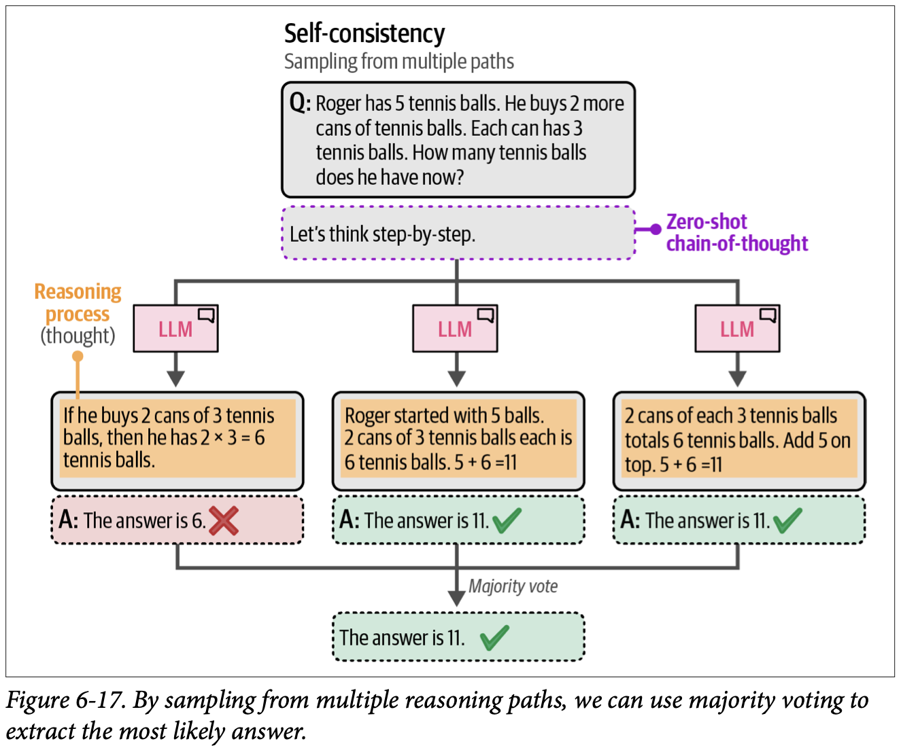
How to read this figure. Top: Roger's tennis-ball question plus "Let's think step-by-step" (zero-shot CoT, purple). It fans out to three LLM calls. Each writes its own orange reasoning: path 1 forgets the starting 5 balls ("2 × 3 = 6") → "The answer is 6." ✗; paths 2 and 3 reason "5 + 6 = 11" → 11 ✓. The vote at the bottom picks 11. One unlucky path is outvoted.
The catch: one question is asked many times, so although performance can improve, it becomes n times slower, where n is the number of output samples.
Modelled: each path is right with probability p; a wrong path picks one of 3 wrong answers at random. The "exact" line uses this toy model; with real LLMs, wrong paths are often correlated, so gains are smaller.
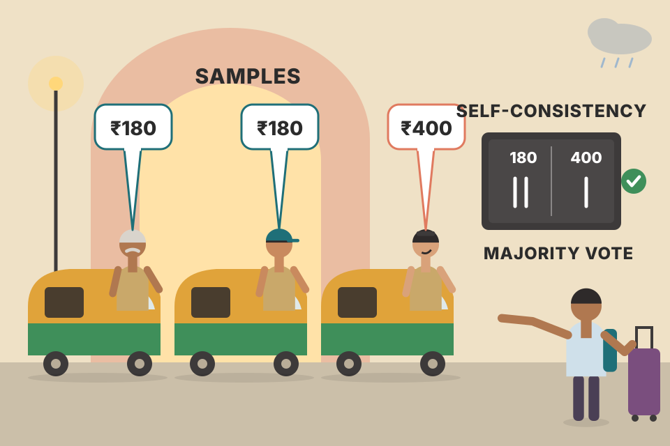
Asking three auto drivers at the station for the fare to Andheri. Two say ₹180, one says ₹400. You go with ₹180. One person can be wrong by chance; the majority is harder to fool.
Where it breaks: if all three drivers share the same bias (it's raining, all inflate), voting won't fix it. Same model, same blind spots.
Correct reasoning paths tend to converge on the same answer; wrong paths scatter across different wrong answers. So the right answer collects votes even if each path is only somewhat likely to be right. Voting needs comparable answers (a number, a label), which is why only the final answer is voted on, not the reasoning text.
p = 0.6 per path, n = 5. The majority (≥ 3 right) happens with probability C(5,3)0.6³0.4² + C(5,4)0.6⁴0.4 + 0.6⁵ = 0.346 + 0.259 + 0.078 = 0.68, and wrong answers split three ways, which helps further. Cost: 5× tokens, and 5× latency if run one after another (run them in parallel to keep latency near 1×, at the same 5× cost).
"How would you make an LLM's numeric answers more reliable without fine-tuning?" Say: "Self-consistency: sample several CoT answers at non-zero temperature and take the majority final answer. It trades n× compute for accuracy; I'd run samples in parallel and only use it on high-value or low-confidence requests. Agreement rate is also a useful confidence signal for routing to a human or a bigger model."
Needs sampling: temperature, top_p. Builds on chain-of-thought. Explored further as tree search: plate 18.
Chain-of-thought and self-consistency aim at more complex reasoning by sampling multiple "thoughts" and making them more thoughtful. They only scratch the surface. An improvement is tree-of-thought (ToT; footnote 10: Yao et al., 2023), which allows in-depth exploration of several ideas.
How it works: a problem needing multiple reasoning steps is broken into pieces. At each step, the model is prompted to explore different solutions. It then votes for the best and continues to the next step.
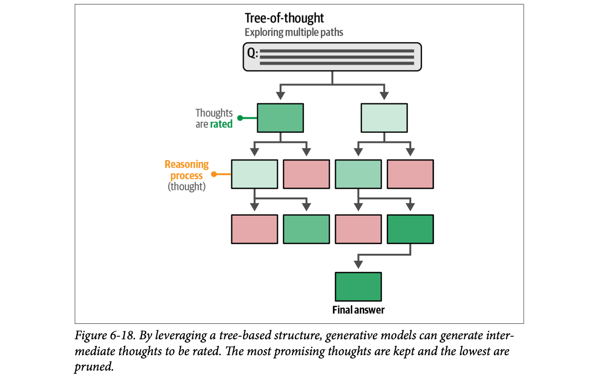
How to read this figure. The question (top) branches into candidate thoughts (intermediate reasoning steps). Each thought is rated: darker green = more promising, pink/red = poor. Red ones are pruned (not expanded). Good ones branch again. The darkest green path leads down to the final answer. Unlike self-consistency (many independent full paths, vote at the end), ToT votes at every step and can drop bad branches early.
This is very helpful when you must consider multiple paths, like writing a story or coming up with creative ideas. The disadvantage: it needs many calls to the model, which slows the application a lot.
Luckily there's a successful attempt to turn tree-of-thought into a simple prompting technique (footnote 11: "Using tree-of-thought prompting to boost ChatGPT's reasoning"). Instead of calling the model many times, ask it to mimic that behaviour by emulating a conversation between multiple experts who question each other until they reach consensus:
# Zero-shot tree-of-thought
zeroshot_tot_prompt = [
{"role": "user", "content": "Imagine three different experts are answering this question. All experts will write down 1 step of their thinking, then share it with the group. Then all experts will go on to the next step, etc. If any expert realizes they're wrong at any point then they leave. The question is 'The cafeteria had 23 apples. If they used 20 to make lunch and bought 6 more, how many apples do they have?' Make sure to discuss the results."}
]
# Generate the output
outputs = pipe(zeroshot_tot_prompt)
print(outputs[0]["generated_text"])Expert 1: Step 1 - Start with the initial number of apples: 23 apples.
Expert 2: Step 1 - Subtract the apples used for lunch: 23 - 20 = 3 apples remaining.
Expert 3: Step 1 - Add the newly bought apples: 3 + 6 = 9 apples.
Expert 1: Step 2 - Confirm the final count: The cafeteria has 9 apples.
Expert 2: Step 2 - Review the calculations: 23 - 20 = 3, then 3 + 6 = 9. The calculations are correct.
Expert 3: Step 2 - Agree with the result: The cafeteria indeed has 9 apples.
All experts agree on the final count: The cafeteria has 9 apples.The correct answer again, this time through a "discussion between experts". The book finds it interesting how such a conversation shows the creativity that comes with prompt engineering. Notice the prompt's parts: several perspectives ("three experts"), step-by-step ("1 step… then next step"), pruning ("if any expert realizes they're wrong… they leave") and a consensus check ("discuss the results").
Planning a route home in Bengaluru traffic. At each junction you consider two or three roads, glance at Google Maps' colours, drop the red ones, and only think further down the green ones. You don't drive every route to the end (that's self-consistency); you prune at each junction.
Where it breaks: maps have real traffic data; the model's "ratings" of its own thoughts are its own guesses and can be confidently wrong.
ToT turns generation into a search: generate candidates (branch), evaluate them (an LLM rates or votes), keep the best (prune), repeat. That's breadth-first or beam search over thoughts. The cost is many calls (branches × depth × rating calls). The zero-shot "three experts" prompt squeezes the same pattern into one generation, cheaper but less rigorous because nothing outside the model checks the branches.
Branching factor 3, depth 3, keep the best 2 at each level, plus one rating call per candidate: level 1: 3 generate + 3 rate; levels 2 and 3: 2 kept × 3 = 6 generate + 6 rate each. Total ≈ 6 + 12 + 12 = 30 calls vs 1 call for CoT and 5 for self-consistency with n = 5.
"Compare CoT, self-consistency and tree-of-thought." Say: "CoT is one reasoning path in one call. Self-consistency samples several independent paths and majority-votes the final answer, n× cost. Tree-of-thought expands several candidate steps at each stage, rates them and prunes, which is a search, at many more calls. There's also a cheap single-prompt ToT that role-plays multiple experts. I'd pick by how valuable accuracy is versus latency and cost."
Chaining many calls: plate 14. Agents that plan and reflect: Ch.7 and AI Engineering Ch.6.
Systems built with generative models may end up in production. Then it is important to verify and control the model's output, so it doesn't break the application, and to build a robust generative AI application. Reasons to validate output:
Controlling output, as we saw with top_p and temperature, is not easy. Models need help to give consistent output that follows guidelines. Generally there are three ways to control the output of a generative model:
| Method | How (book) | Where covered |
|---|---|---|
| Examples | Provide a number of examples of the expected output. | plate 20 |
| Grammar | Control the token selection process. | plate 21 |
| Fine-tuning | Tune a model on data that contains the expected output. | Ch.12 |
Toy checks in your browser: JSON.parse for structure, an allowed-label set for validity, a simple phone/email pattern for PII. Accuracy checks need a source of truth or a second model.
A UPI payment screen. Before money moves, the app checks the UPI ID format, the amount is a number, and asks for a PIN. It does not trust that what you typed is right. Your backend should treat LLM output the same way: input from an untrusted source.
Where it breaks: a UPI ID either matches the format or not; "is this answer accurate?" has no regex, which is why accuracy is the hardest of the four.
The model is a probabilistic text generator, so any property you need (format, allowed values, safety, truth) is only likely, never guaranteed, unless you enforce it. Examples raise the probability; grammars force the format at decode time; fine-tuning changes the model's defaults. Validation in code is the final safety net for all of them.
"How do you make LLM output safe to consume in a backend?" Say: "Treat it like untrusted input. Request a schema (structured outputs or a JSON grammar), validate with a schema validator, check enums and ranges, run PII and safety filters, and retry with the error message or fall back if it fails. For tool-calling agents, the tool layer validates arguments before executing anything."
Guardrails and evaluation: AI Engineering Ch.4 and Ch.10. Fine-tuning for format: Ch.12.
A simple fix: show the model examples of what the output should look like. Few-shot learning, seen before, can also guide the structure of the output. Example: create a character profile for an RPG (role-playing game). First with no examples:
# Zero-shot learning: Providing no examples
zeroshot_prompt = [
{"role": "user", "content": "Create a character profile for an RPG game in JSON format."}
]
# Generate the output
outputs = pipe(zeroshot_prompt)
print(outputs[0]["generated_text"])```json
{
"characterProfile": {
"name": "Eldrin Stormbringer",
"class": "Warlock",
"race": "Half-Elf",
"age": 27,
"gender": "Male",
"alignment": "Chaotic Good",
"background": "Rogue",
…
},
"attributes": {
"strength": 10,
"dexterity": 17,
"constitution": 12,
"intelligence": 12,
"wisdom": 10,
"charismaThis truncated output is not valid JSON: the model stopped generating after starting the "charisma" attribute. Also we might not want some of these attributes. Instead give the model an example of the expected format (one-shot):
# One-shot learning: Providing an example of the output structure
one_shot_template = """Create a short character profile for an RPG game. Make sure to only use this format:
{
"description": "A SHORT DESCRIPTION",
"name": "THE CHARACTER'S NAME",
"armor": "ONE PIECE OF ARMOR",
"weapon": "ONE OR MORE WEAPONS"
}
"""
one_shot_prompt = [
{"role": "user", "content": one_shot_template}
]
# Generate the output
outputs = pipe(one_shot_prompt)
print(outputs[0]["generated_text"]){
"description": "A cunning rogue with a mysterious past, skilled in stealth and deception.",
"name": "Lysandra Shadowstep",
"armor": "Leather Cloak of the Night",
"weapon": "Dagger of Whispers, Throwing Knives"
}The model followed the example perfectly, giving more consistent behaviour. Few-shot learning improves the structure of output, not only its content. The template uses placeholder values in CAPS ("A SHORT DESCRIPTION") to tell the model what each field should contain, and "short" plus only four keys keeps the output small enough to finish.
Important caveat: it is still up to the model whether it follows your format. Some models are better at following instructions than others.
Modelled token counts. The book doesn't state why its zero-shot output stopped mid-attribute; running out of the generation budget on a long, unbounded profile is a common cause. A small template keeps output short enough to finish, and a JSON grammar (next plate) guarantees the braces close.
A government form vs a blank sheet. Ask someone to "write your details" on a blank sheet and you get a rambling page that may run off the edge. Hand them a printed form with four boxes and you get exactly four answers in the right places.
Where it breaks: a printed form physically limits the boxes; the model can still add a fifth key or a chatty sentence before the JSON.
The template is in the context, so copying its keys, order and quoting is the most likely continuation. "Only use this format" plus a compact schema narrows the space of outputs. But it's still sampling from probabilities, so nothing prevents a bad token; that's the gap the next technique closes.
"The model sometimes returns JSON wrapped in ```json fences or with extra keys. What do you do?" Say: "Show the exact schema with an example, say 'only use this format', keep it compact, set temperature low. Then still parse defensively: strip fences, validate against the schema, retry on failure. If the provider supports structured outputs or a JSON grammar, I use that so the format is guaranteed."
Few-shot basics: plate 13. Format component: plate 12. Structured output: AI Engineering Ch.2.
Few-shot learning has a big disadvantage: you cannot explicitly prevent certain output. You guide the model, but it may not follow entirely. So packages appeared quickly to constrain and validate generative output, such as Guidance, Guardrails and LMQL. Partly, they use generative models to validate their own output: the output is fed back as a new prompt and checked against predefined guardrails.
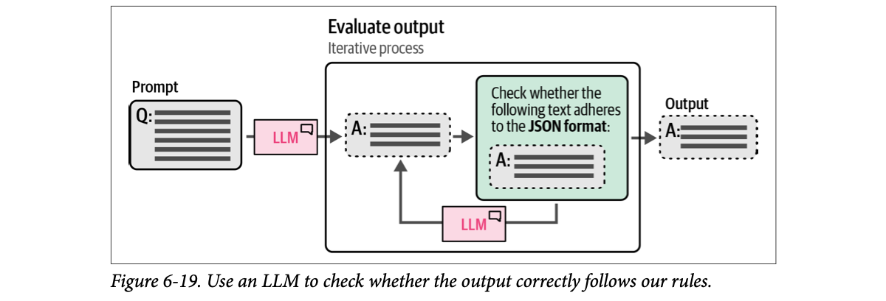
How to read this figure. Left to right: the prompt goes into an LLM and gives answer A. Inside the "Evaluate output — iterative process" box, A is pasted into a checking prompt ("Check whether the following text adheres to the JSON format:"). A second LLM call judges it; the arrow loops back to A (fix and re-check) until it passes, then A leaves as the output. Validation is itself a prompt: chain prompting used as a checker.
The same idea can control formatting: since you already know the structure, generate the fixed parts yourself and let the LLM fill only the unknown parts.
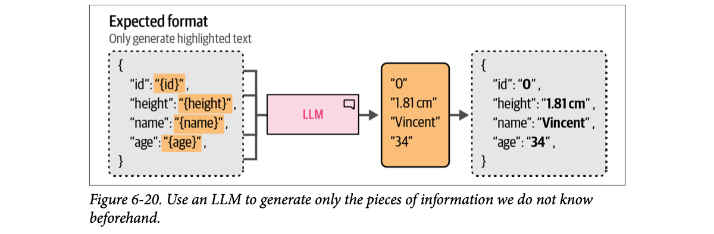
How to read this figure. Left: the JSON skeleton with braces, keys and quotes fixed; only the orange slots {id}, {height}, {name}, {age} are "to generate". The LLM produces just the values ("0", "1.81 cm", "Vincent", "34"), and the code drops them into the skeleton (right). The model can't break the braces because it never writes them.
One step further: instead of validating after, validate during token sampling. When sampling, define grammars or rules that the LLM must follow when choosing its next token. If you ask for "positive", "negative" or "neutral" in sentiment classification, the model may still return something else. By constraining the sampling, the LLM can only output what you allow. Note: this is still affected by top_p and temperature (they choose among the allowed tokens).
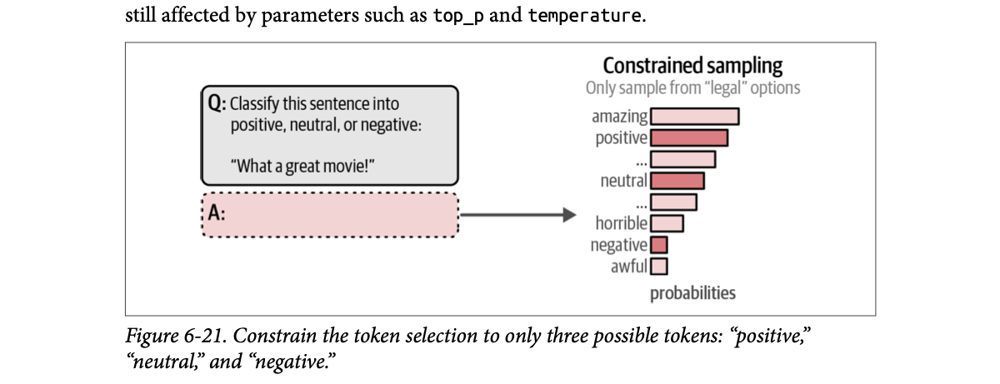
How to read this figure. The model's unconstrained top choice for "What a great movie!" is "amazing" (longest bar), which is not a legal label. Under constrained sampling ("only sample from 'legal' options") only the dark bars, positive, neutral and negative, can be picked; amazing, horrible, awful and the rest are masked. Among the legal ones, "positive" has the highest probability.
The book uses llama-cpp-python, a library similar to transformers for loading language models. It is generally used to load and run compressed models efficiently (via quantization, see Chapter 12), but it can also apply a JSON grammar. It loads the same Phi-3 model in a different file format, GGUF, which llama-cpp-python expects and which is generally used for compressed (quantized) models.
Because you load a new model, restart the notebook to clear old models and empty the VRAM, or run:
import gc
import torch
del model, tokenizer, pipe
# Flush memory
gc.collect()
torch.cuda.empty_cache()del removes the Python names, gc.collect() makes Python free the now-unreferenced objects, and torch.cuda.empty_cache() hands PyTorch's cached GPU memory back so the next model has room.
from llama_cpp.llama import Llama
# Load Phi-3
llm = Llama.from_pretrained(
repo_id="microsoft/Phi-3-mini-4k-instruct-gguf",
filename="*fp16.gguf",
n_gpu_layers=-1,
n_ctx=2048,
verbose=False
)| Argument | Meaning (book) |
|---|---|
repo_id, filename | The Hugging Face repository where the model lives, and which file in it (*fp16.gguf = the 16-bit GGUF file, a glob pattern). |
n_gpu_layers=-1 | Run all layers of the model on the GPU. |
n_ctx=2048 | The context size of the model (how many tokens it can hold). |
verbose=False | Don't print loading logs. |
To generate with the internal JSON grammar, just set response_format to a JSON object. Under the hood it applies a JSON grammar so the output follows that format. The request: a warrior RPG character in JSON for a Dungeons & Dragons session.
# Generate output
output = llm.create_chat_completion(
messages=[
{"role": "user", "content": "Create a warrior for an RPG in JSON format."},
],
response_format={"type": "json_object"},
temperature=0,
)['choices'][0]['message']["content"]create_chat_completion takes OpenAI-style messages and applies the chat template; temperature=0 makes it deterministic; the result is read from ['choices'][0]['message']["content"], the same shape as an OpenAI chat response. To check the output really is JSON, parse it:
import json
# Format as json
json_output = json.dumps(json.loads(output), indent=4)
print(json_output){
"name": "Eldrin Stormbringer",
"class": "Warrior",
"level": 10,
"attributes": { "strength": 18, "dexterity": 12, "constitution": 16, "intelligence": 9, "wisdom": 14, "charisma": 10 },
"skills": {
"melee_combat": { "weapon_mastery": 20, "armor_class": 18, "hit_points": 35 },
"defense": { "shield_skill": 17, "block_chance": 90 },
"endurance": { "health_regeneration": 2, "stamina": 30 }
},
"equipment": [
{ "name": "Ironclad Armor", "type": "Armor", "defense_bonus": 15 },
{ "name": "Steel Greatsword", "type": "Weapon", "damage": 8, "critical_chance": 20 }
],
"background": "Eldrin grew up in a small village on the outskirts of a war-torn land. ..."
}(Book output, compacted onto fewer lines here.)
The output is properly formatted JSON. json.loads would have thrown an error otherwise. This lets you use generative models more confidently in applications that expect a specific format.
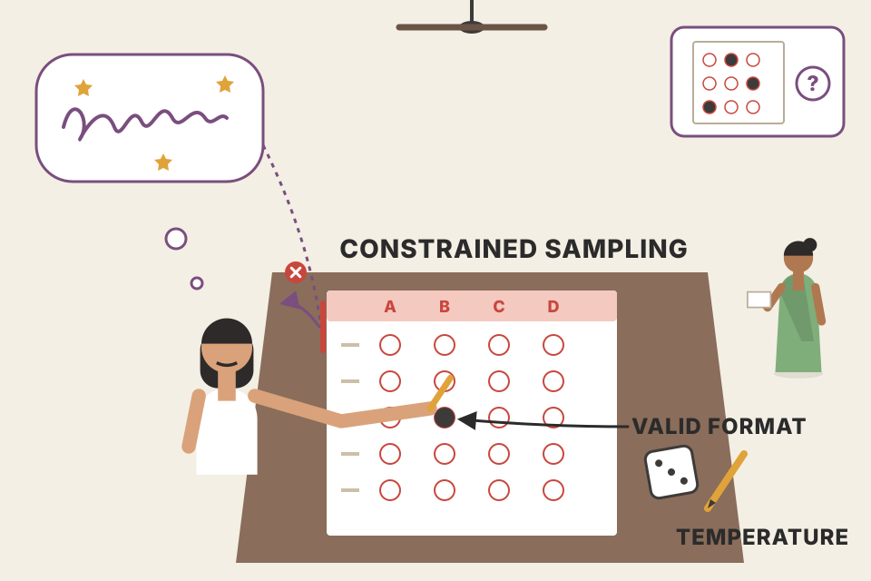
An exam with OMR sheets. The student can only shade A, B, C or D; there is no space to write "amazing". Constrained sampling is an OMR sheet for the model: whatever it "wants" to say, only legal bubbles can be filled. Temperature still decides which bubble it shades.
Where it breaks: OMR guarantees the form, not the right answer. A JSON grammar guarantees valid JSON, not correct or complete content (the book's grammar is "any JSON object", not your exact schema).
At each step, the grammar (a state machine for JSON, or a list of allowed words) knows which tokens can legally come next. The sampler sets every illegal token's probability to zero (masks its logit to −∞), renormalises the rest, then applies temperature/top_p and draws. Because the check happens before each token is chosen, invalid output is impossible, no retries needed. Generating fixed parts yourself (Fig 6-20) is the same idea done in your code instead of the sampler.
Unconstrained probabilities after "Sentiment:" for "What a great movie!": amazing 0.30, positive 0.25, neutral 0.15, horrible 0.08, negative 0.05, awful 0.04, other 0.13. Mask to the three labels: 0.25 + 0.15 + 0.05 = 0.45. Renormalise: positive 0.56, neutral 0.33, negative 0.11. With greedy/temperature 0 → always "positive". With temperature 1, "neutral" still shows up about 1 time in 3, a reminder that constraining format doesn't fix judgement.
Since the book, hosted APIs added structured outputs where you pass a full JSON Schema and decoding is constrained to it (OpenAI response_format with json_schema, tool/function calling in most providers). Open-source serving stacks (vLLM, llama.cpp GBNF grammars, Outlines, XGrammar) offer schema- or regex-constrained decoding. Library APIs change often, so check current docs.
"How do you guarantee an LLM returns valid JSON?" Say: "Prompting and few-shot only make it likely. To guarantee it, use constrained decoding: a JSON grammar or a JSON Schema in the decoder masks every token that would break the structure, like llama-cpp-python's response_format={'type':'json_object'} or provider structured outputs. I still validate the schema and values in code, because a grammar guarantees syntax, not correctness. For tool-calling agents this is what makes arguments parseable every time."
Quantization and GGUF: Ch.12. llama-cpp-python and LangChain are used again in Ch.7. Sampling knobs still apply: plate 07. Structured outputs and inference: LLM Engineer's Handbook Ch.8.
The chapter covered the basics of using generative models through prompt engineering and output verification. It focused on the creativity and potential complexity of prompt engineering: the components of a prompt are key to generating and optimising output for different use cases.
It then covered advanced techniques such as in-context learning and chain-of-thought. These guide models to reason through complex problems by giving examples or phrases that encourage step-by-step thinking, mimicking human reasoning.
Overall, prompt engineering is a crucial part of working with LLMs: it lets you communicate your needs and preferences to the model effectively. Mastering it unlocks some of the potential of LLMs and gives high-quality responses that meet your requirements.
The next chapter builds on this with more advanced techniques: going beyond prompt engineering to let LLMs use external memory and tools.
| Term | Plain meaning |
|---|---|
| GPT | Generative pre-trained transformer: a model trained mainly to generate text. |
| Foundation model | LLM pretrained on vast text, often fine-tuned later; released in several sizes. |
| Proprietary vs open source | Closed (usually stronger) vs downloadable weights (flexible, free). |
| VRAM | GPU memory; Phi-3-mini (3.8B) fits in about 8 GB. |
| Chat / prompt template | Model-specific format with special tokens (<|user|>, <|assistant|>, <|end|>) that turns messages into one string. |
| BOS token | Beginning-of-sentence token, <s> for Phi-3. |
| do_sample | False = greedy (always top token); True = sample, enabling temperature/top_p. |
| Temperature | How likely less probable tokens are; 0 = same output every time. |
| top_p (nucleus sampling) | Consider tokens until their cumulative probability reaches p. |
| top_k | Consider exactly the k most probable tokens. |
| Prompt engineering | Designing prompts to get useful responses; also for evaluation and safety. |
| Instruction / data / output indicator | The task, the input it refers to, and labels like "Sentiment:" that shape the answer. |
| Instruction-based prompting | Using prompts to answer a question or solve a task (classify, search, summarise, code, NER). |
| Specificity | Saying exactly what you want; arguably the most important technique. |
| Hallucination | Confidently stating incorrect information. |
| Primacy / recency effect | LLMs focus on the start / end of a prompt; the middle gets lost. |
| Persona, context, format, audience, tone | Advanced prompt components (role, reason, output shape, reader, voice). |
| ELI5 | "Explain it like I'm 5": an audience setting. |
| Emotional stimuli | Phrases like "This is very important for my career." |
| In-context learning | Giving correct examples in the prompt; zero-, one-, few-shot. |
| Chain prompting | Output of one prompt becomes input of the next. |
| System 1 / System 2 | Fast intuitive vs slow deliberate thinking (Kahneman). |
| Chain-of-thought (CoT) | Prompting the model to write reasoning ("thoughts") before the answer; zero-shot CoT uses "Let's think step-by-step". |
| Self-consistency | Ask the same prompt many times, majority-vote the answer; n× slower. |
| Tree-of-thought (ToT) | Explore and rate intermediate thoughts at each step, prune the weak ones. |
| Guardrails | Predefined rules output must satisfy (format, safety, etc.). |
| PII | Personally identifiable information. |
| Constrained sampling / grammar | Rules applied during token selection so only legal tokens can be chosen. |
| GGUF | Model file format used by llama.cpp / llama-cpp-python, commonly for quantized models. |
AutoModelForCausalLM, AutoTokenizer, pipeline("text-generation"), apply_chat_template: loading and running Phi-3 and applying its chat template.torch.cuda.empty_cache() to free GPU memory between models.response_format={"type":"json_object"} applies a JSON grammar.In production today: OpenAI/Anthropic/Google APIs with system prompts, JSON-Schema structured outputs and tool calling; vLLM and TGI for serving open models with chat templates and guided decoding; Outlines / XGrammar / llama.cpp GBNF for grammars; prompt-management and eval tools (e.g. LangSmith, Promptfoo) for the iteration loop the book describes.
It has 3.8B parameters, fits devices with up to 8 GB VRAM, and is free/open. Starting small gives a solid foundation; moving to bigger models later is easier than moving down from big models whose extra ability hid weak prompts.
They mark who said what (<|user|>, <|assistant|>), the start of the sequence (<s> BOS), and where a turn ends, which tells the model when to stop generating (<|end|>). It's the format used in training.
Probably do_sample=False: greedy decoding picks the top token and ignores temperature/top_p. Set do_sample=True.
Temperature reshapes the probabilities (flatter or sharper). top_p cuts the candidate list to the smallest set whose cumulative probability reaches p, without reshaping.
Low temperature, high top_p: deterministic choices of highly probable tokens, but a wide pool for vocabulary variety.
It's an output indicator: it signals a short label is expected, so the model writes "Positive" instead of a full sentence.
Specificity, hallucination (allow "I don't know"), and order (instruction at start or end; primacy/recency). Specificity is arguably the most important.
Persona, instruction, context, format, audience, tone, data.
To separate the user's question from the model's answer; otherwise it would look like talking to ourselves. The model sees "this is how I answered before" and copies the pattern for "screeg".
Each call can use different parameters, e.g. a few tokens for the name/slogan and many for the sales pitch. Also: inspectable intermediate outputs, validation steps, parallel branches.
It spreads compute over more tokens; each written step becomes context for the next, so the model uses what it has generated to stabilise the final answer instead of computing it from a few tokens.
All n samples would be identical, so the vote adds nothing but costs n×. Self-consistency needs sampling diversity (temperature/top_p).
ToT rates and prunes intermediate thoughts at each step (a search); self-consistency samples complete paths and votes only at the end. The cheap variant is a single prompt asking three "experts" to reason step by step and drop out when wrong.
It stopped mid-"charisma", so it was invalid JSON, and it had unwanted attributes. A one-shot template with a compact format fixed it; a JSON grammar in llama-cpp-python guarantees valid JSON.
No. A grammar guarantees syntax (and, with a schema, structure), not correct values, completeness, safety or truth. Still validate fields, ranges, PII and facts, and keep retries/fallbacks. Also, constrained choices are still affected by temperature/top_p.